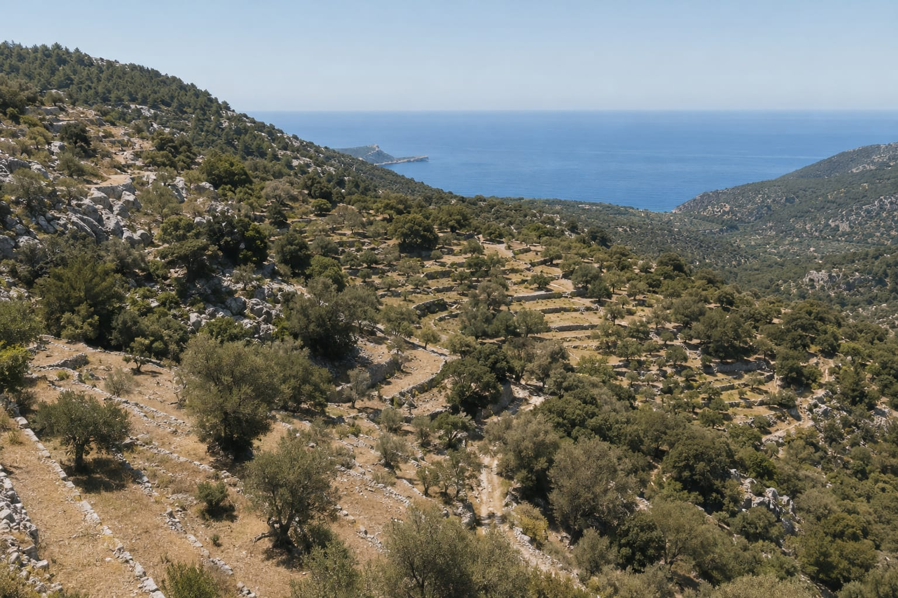
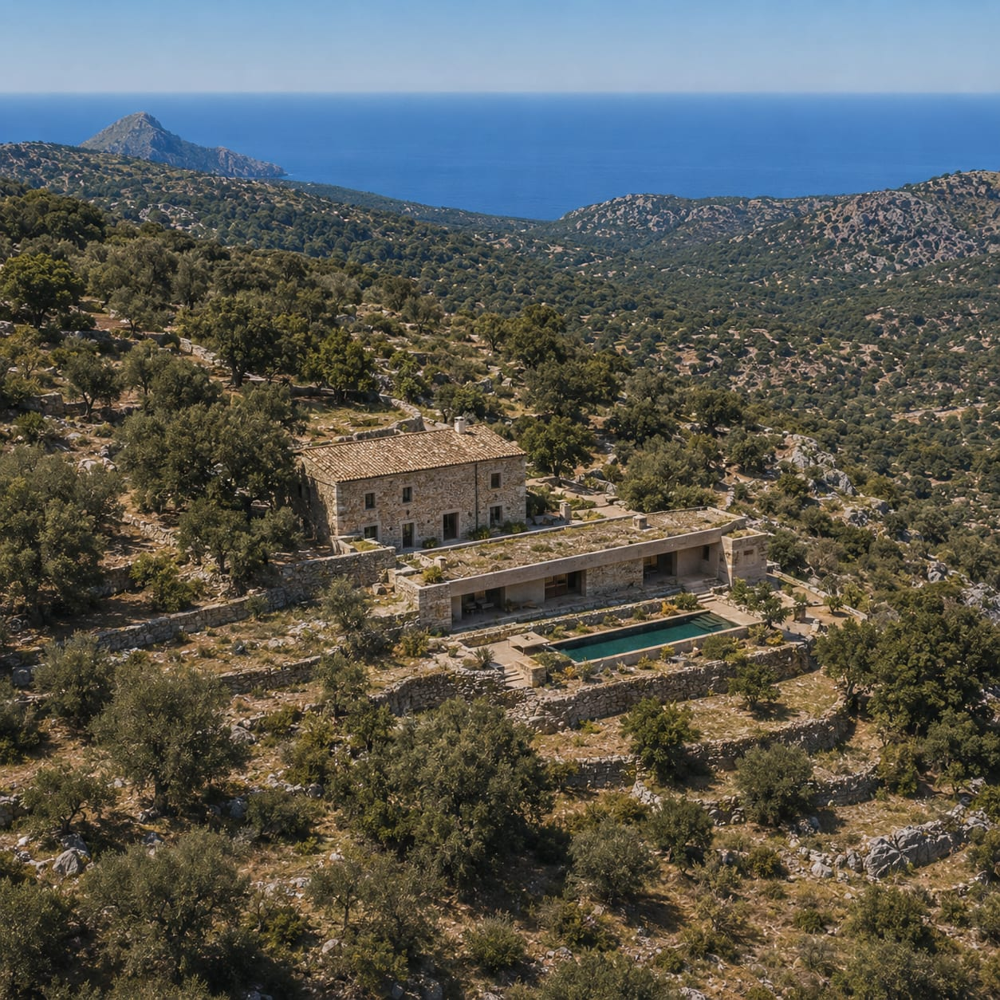
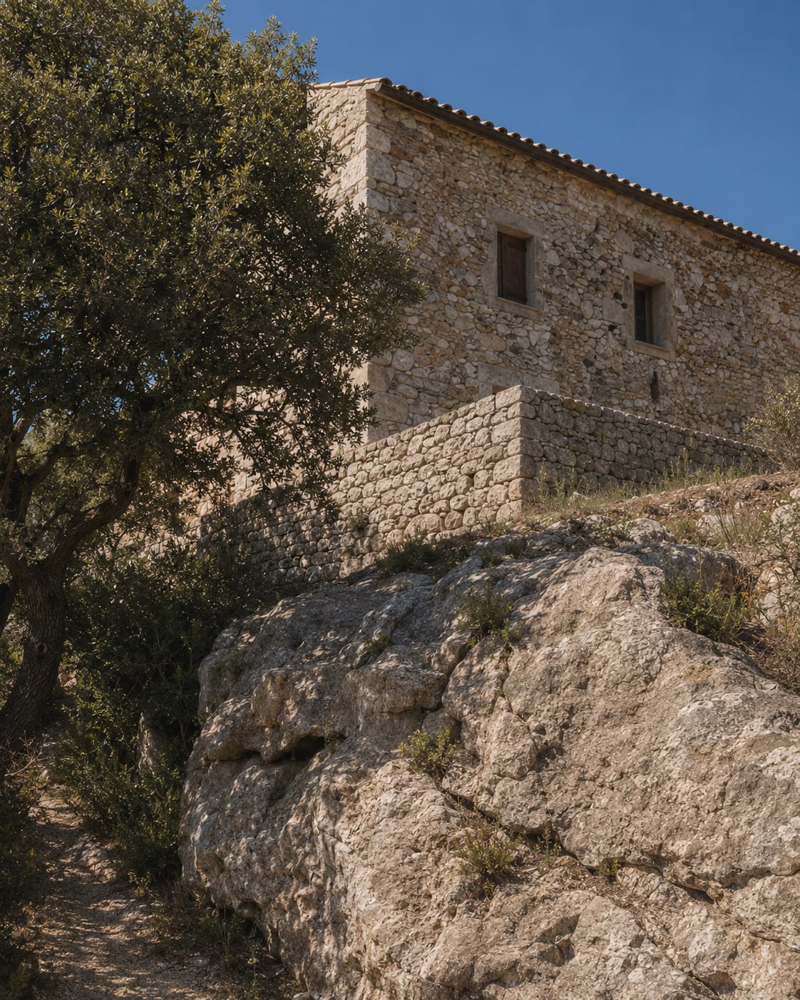
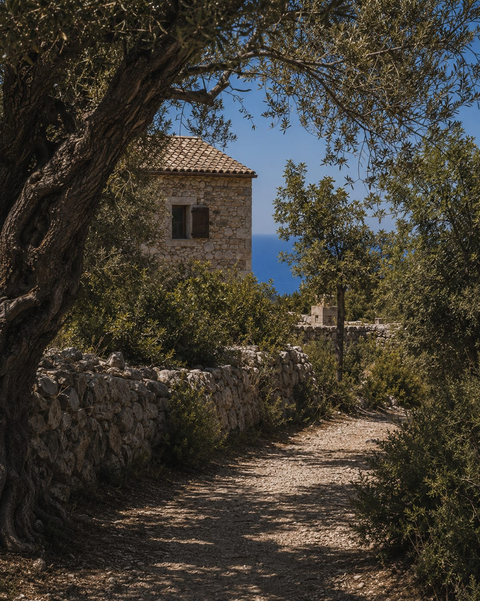
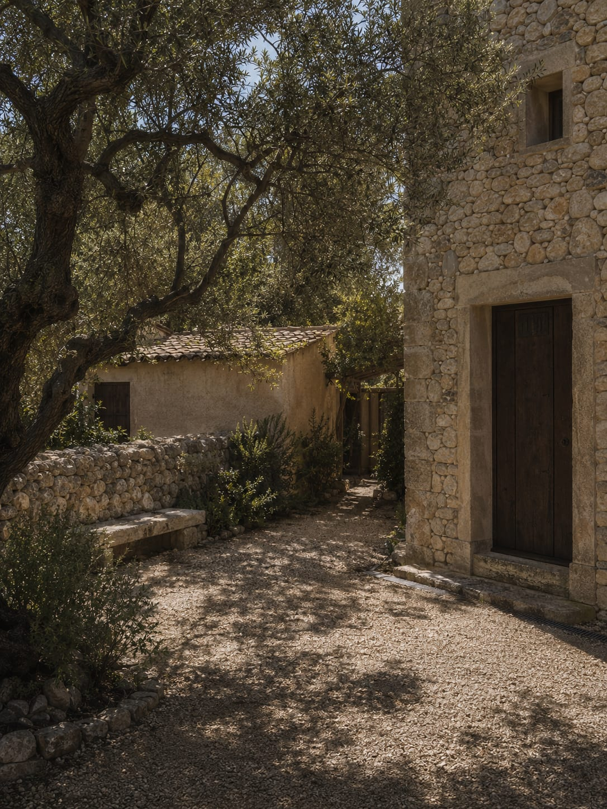
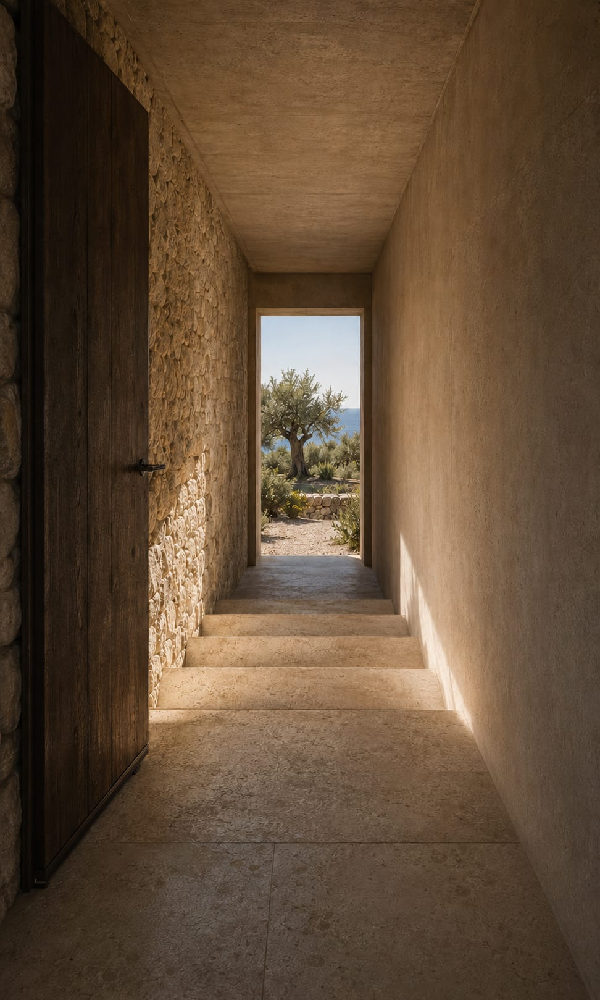
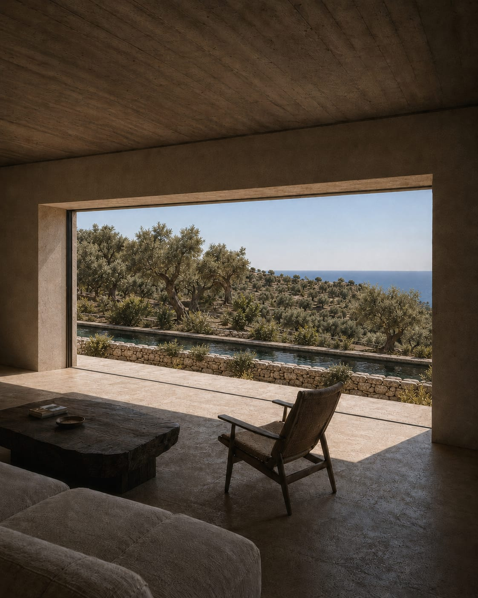
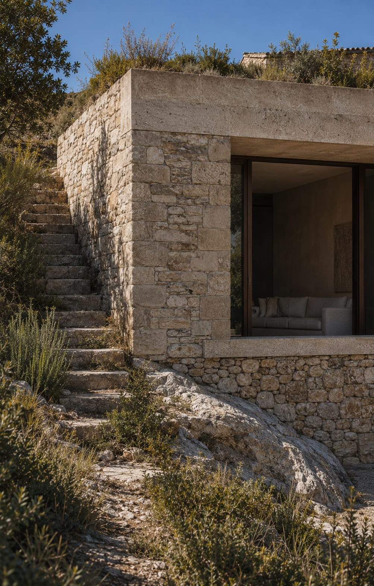
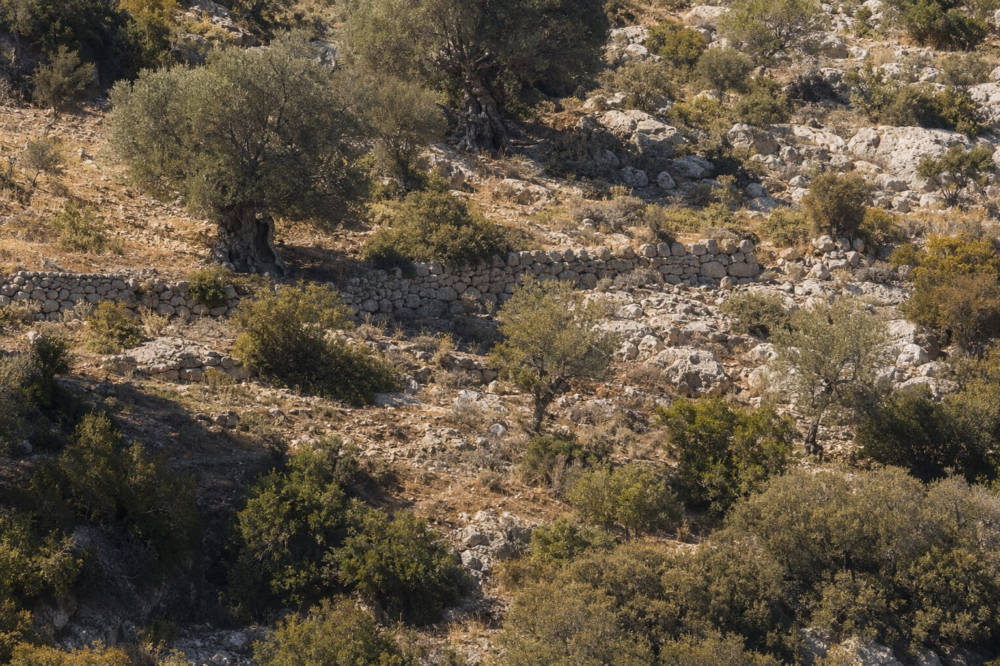
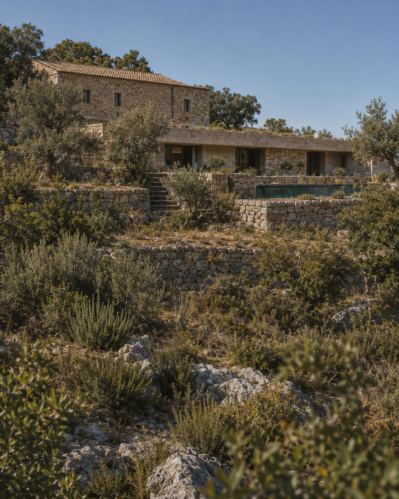
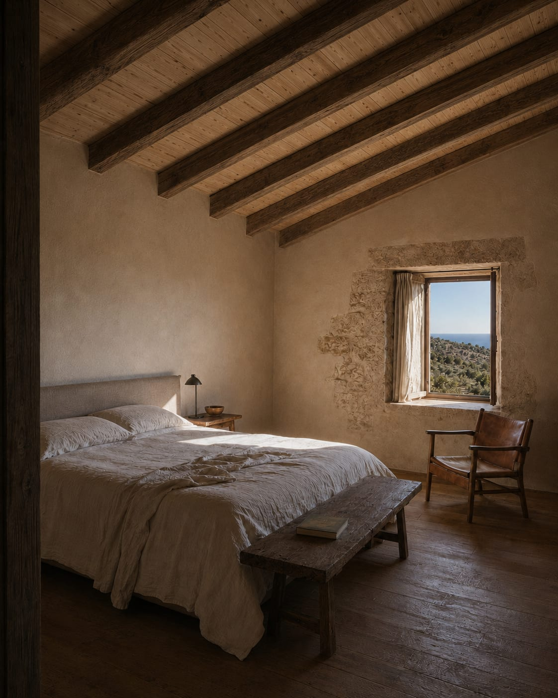
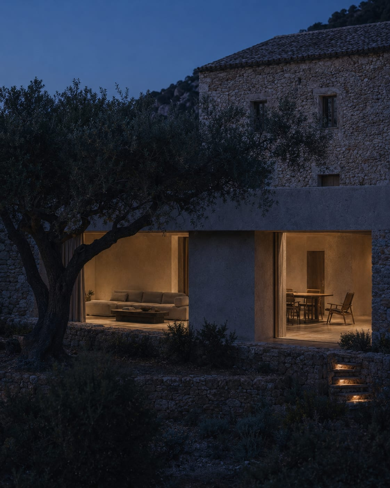
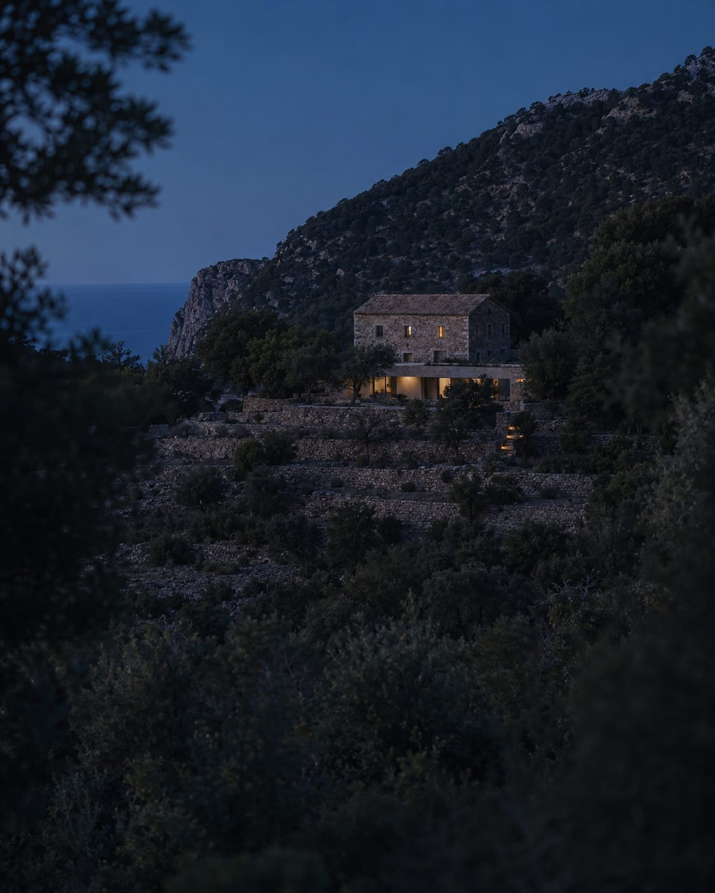
Finca Son Ponent
Desarrollado como parte del análisis de una posible adquisición inmobiliaria en Mallorca, Finca Son Ponent explora la transformación de una vivienda histórica existente mediante una ampliación arquitectónica contenida y una nueva relación con el paisaje. Desarrollé el concepto arquitectónico, la dirección inicial de interiores y la estrategia paisajística para evaluar el potencial de la propiedad antes de una decisión definitiva de compra.